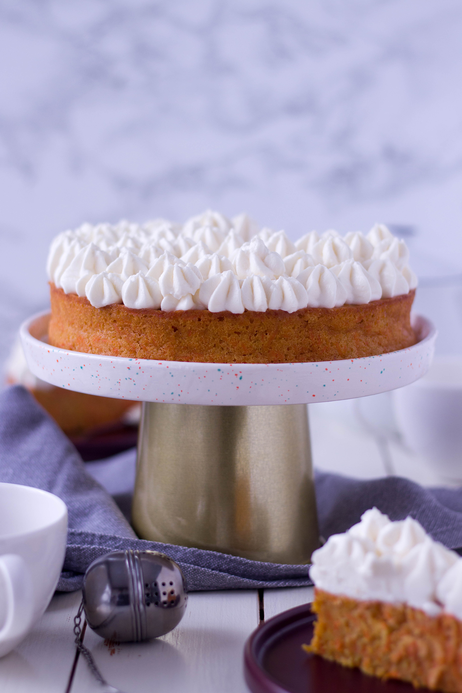

Torta od mrkve
Sastojci
Biskvit
150 g brašna
300 g ribane mrkve
1 žlica praška za pecivo
1 žličica cimeta (ili začina za medenjake)
prstohvat soli
50 g smeđeg šećera
100 g bijelog šećera
2 veća jaja
100 g maslaca
korica naranče i limuna
Krema
250 g krem sira
100 ml vrhnja za šlag
50 g šećera u prahu
1 žličica ekstrakta vanilije
Upute
- Maslac otopite na laganoj vatri i ostavite da se ohladi.
- Operite, očistite i naribajte mrkvu. Po potrebi je ocijedite.
- Upalite pećnicu na 180 C.
- Pjenasto umutite jaja sa šećerom.
- Dodajte mlaćenicu i otopljeni maslac, promiješajte.
- Dodajte sve suhe sastojke- brašno, prašak za pecivo, cimet i umiješajte da se sjedini.
- Na kraju lagano umiješajte mrkvu, koricu limuna i naranče.
- Kalup namastite maslacem i u njega stavite smjesu.
- Pecite u prethodno zagrijanoj pećnici 20 min, onda smanjite na 160 i pecite još 20-30 minuta,
- Pečeni biskvit izvadite na rešetku i ostavite da se skroz ohladi.
- Kremu pripremite tako da prvo pjenasto umutite krem sir i šećer u prahu, zatim dodajte ekstrakt vanilije i vrhnje za šlag i miksajte dok ne dobijete mazivu teksturu.
- Biskvit premažite s dobivenom kremom.
- Ukrasite po želji.
- Ostavite da odleži u hladnjaku preko noći pa poslužite.
Savjeti
Evo rezultata

Inspiraciju sam dobila sa stranice:
Torta od mrkve